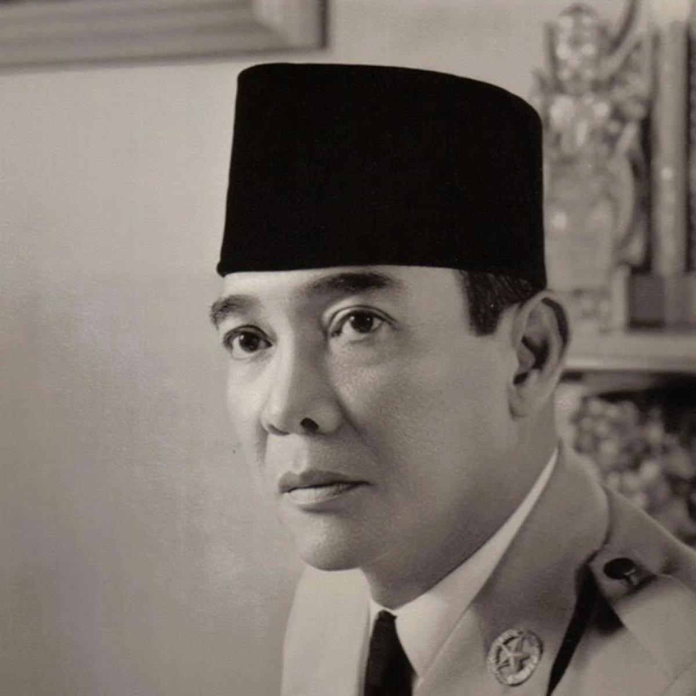

Jadwal Kegiatan
PAC GPM 2023
-
Hari Tanggal Jam TempatPenyuluhan Sabtu 00 Aula GPMKerja Bakti Sabtu 00 Aula GPMSeminar Sabtu 00 Aula GPMPelatihan Sabtu 00 Aula GPM
-
Penyuluhan Kerja Bakti Seminar PelatihanKerja Bakti Sabtu 00 Aula GPMSeminar Sabtu 00 Aula GPMPelatihan Sabtu 00 Aula GPMPenyuluhan Kerja Bakti Seminar PelatihanKerja Bakti Sabtu 00 Aula GPMSeminar Sabtu 00 Aula GPMPelatihan Sabtu 00 Aula GPM
Tolong beritau kami tentang permasalahan yang sedang terjadi dimasyarakat
Kami adalah mitra pemerintah bertugas untuk rakyat demi terbentuknya sosialisasi
masyarakat gotong royong agar menjadi lebih baik.
Kata Kata
Motivasi Soekarno
“Saya tidak mengatakan, bahwa saya menciptakan Pancasila. Apa yang saya kerjakan hanyalah menggali jauh ke dalam bumi kita, tradisi-tradisi kita sendiri, dan saya menemukan lima butir mutiara yang indah”
ir.Soekarno
Sang Proklamator

“Negeri ini, Republik Indonesia, bukanlah milik suatu golongan, bukan milik suatu agama, bukan milik suatu kelompok etnis, bukan juga milik suatu adat-istiadat tertentu, tapi milik kita semua dari Sabang sampai Merauke!.”
ir.Soekarno
Sang Proklamator“Tulislah tentang aku dengan tinta hitam atau tinta putihmu. Biarlah sejarah membaca dan menjawabnya.”
ir.Soekarno
Sang Proklamator